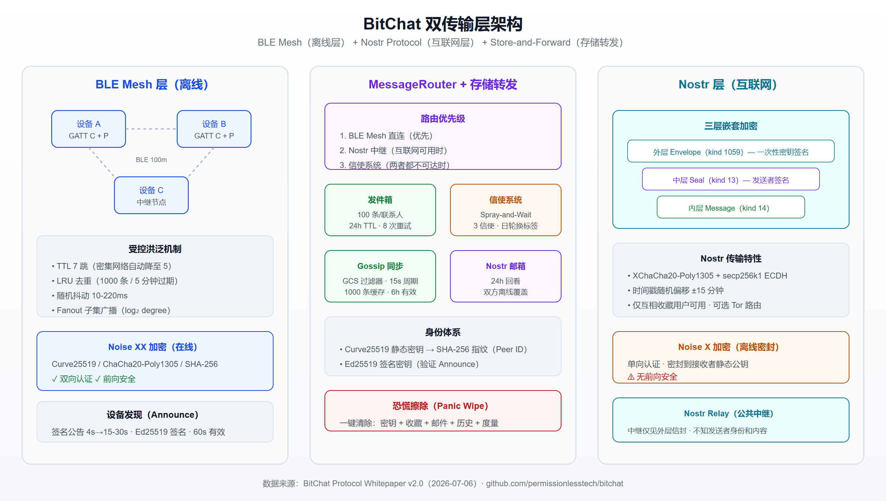

BitChat 从技术原理到实战：无网络环境下的加密通信指南
2026 年 7 月，印度政府要求 GitHub 下架一个开源聊天应用的仓库——理由是抗议者在互联网封锁期间用它来组织通讯。这款应用就是 BitChat，一个不需要网络、不需要手机号、不需要任何中心服务器的 P2P 加密聊天工具。它的 GitHub Star 数已突破 33,000，被 Forbes 称为"可能构建自由互联网的基石"。
这不是又一个 Signal 的替代品。BitChat 解决的是一个更底层的问题：当互联网本身不存在时，人们如何安全地通信？
本文将从协议白皮书出发，完整拆解 BitChat 的双传输层架构、加密机制与存储转发设计，并提供各平台的安装和实战指南。
一、BitChat 是什么：一句话定位
BitChat 是由 Jack Dorsey（Twitter/X 联合创始人、Block CEO）于 2025 年 7 月发布的去中心化 P2P 通信应用。它的核心特性可以归纳为：
- 零依赖：不需要互联网、不需要手机号、不需要注册账号、不需要中心服务器
- 双传输层：本地通过蓝牙低功耗（BLE）Mesh 网络通信；有网时通过 Nostr 协议桥接全球
- 端到端加密：采用 Noise Protocol Framework（Curve25519 / ChaCha20-Poly1305 / SHA-256）
- 完全开源：Unlicense 协议，代码属于公共领域
Dorsey 最初将它描述为"一个周末项目"（a weekend project），灵感来自早期的 FireChat——但技术层面远不止于此。
二、从飞鸽传书到 BitChat：无服务器通信的三十年
中国互联网老用户可能还记得飞鸽传书（IPMsg / FeiQ）——那个在办公室局域网里传文件、发消息的轻量工具。1996 年日本开发者白水启章发布了 IP Messenger 协议，通过 UDP 广播在同一网段内自动发现设备，不需要任何聊天服务器。后来国产兼容客户端「飞秋」风靡国内企业和学校宿舍，成为一代人的记忆。
BitChat 的核心理念与飞鸽传书一脉相承：去掉服务器，让设备直接对话。 但三十年间，问题的层级发生了根本变化。
| 维度 | 飞鸽传书 / IPMsg（1996） | BitChat（2025） |
|---|---|---|
| 底层链路 | IP 网络（需路由器/交换机/WiFi） | 蓝牙 BLE 射频（无需任何网络设备） |
| 发现方式 | UDP 广播（同一广播域） | BLE 广播 + Ed25519 签名 Announce |
| 多跳中继 | ❌ 仅同网段直达 | ✅ TTL 7 跳，设备互相转发 |
| 离线投递 | ❌ 对方必须在线 | ✅ 发件箱 + 信使 + Gossip + Nostr 邮箱 |
| 加密 | 默认明文，后期可选 RSA+Blowfish | 强制 Noise XX/X 端到端加密 |
| 身份 | 主机名 + 用户名 + IP，完全可追溯 | Curve25519 公钥指纹，无账号无手机号 |
| 跨网通信 | ❌ 仅局域网 | ✅ Nostr 中继桥接全球（可选 Tor） |
| 设计假设 | 网络存在且环境可信 | 网络随时消失，环境随时被监听 |
关键区别在于：飞鸽传书虽然不需要聊天服务器，但依然需要一个可用的 IP 网络——路由器断电，通信即刻中断。BitChat 连这层基础设施都不依赖，手机本身就是网络节点。
如果说飞鸽传书解决的是"局域网里不装 QQ 也能聊天"的便利问题，BitChat 解决的是"整个互联网消失后人们如何继续通信"的生存问题。三十年间，从"可信环境下的效率工具"进化到"对抗性环境下的通信基础设施"。
三、为什么需要"脱网通信"
传统即时通讯（微信、WhatsApp、Telegram 甚至 Signal）都依赖中心化基础设施：
- 服务器宕机 → 全部瘫痪
- 互联网被切断 → 无法通信
- 需要手机号注册 → 身份可追踪
- 中心化日志 → 存在审查/监控风险
现实场景中，断网并非罕见：
- 自然灾害：地震/洪水摧毁基站，灾区通信中断
- 网络管控：多国曾在抗议期间实施互联网限制（2026 年印度事件即为典型）
- 极端环境：沙漠、远洋、地下空间、人群过密导致基站过载
- 隐私需求：记者、维权者、商业谈判中的保密通信
BitChat 的设计理念是：通信是基本权利，不应依赖任何第三方基础设施的许可。
四、双传输层架构详解
BitChat 的协议白皮书（v2.0，2026 年 7 月 6 日更新）定义了两个并行的传输层，由统一的 MessageRouter 调度。

4.1 BLE Mesh 层（离线核心）
每部手机同时充当蓝牙 GATT Central（客户端）和 Peripheral（服务端），形成自组织 Mesh 网络：
- 发现机制：设备每 4 秒广播签名公告（announce），找到邻居后退避至 15-30 秒
- 消息转发：受控洪泛（controlled flood），TTL 默认 7 跳，密集网络自动收缩到 5 跳
- 去重：LRU 缓存（1000 条，5 分钟过期），基于发送者+时间戳+类型+摘要去重
- 抖动延迟：10-220 毫秒随机延迟，让去重机制发挥作用
- 分片：超过 MTU 的数据包拆为 ~469 字节片段，接收端组装（最大 1 MiB）
简单来说：你的手机收到一条消息后，会自动转发给蓝牙范围内的其他 BitChat 设备，后者继续转发——形成一条跨越多个设备的消息链。理论上 7 跳 × 100 米 BLE 范围 ≈ 700 米覆盖距离。
4.2 Nostr 层（互联网桥接）
当设备连接到互联网时，BitChat 通过 Nostr 中继（relay）将消息投递到远端：
- 仅用于"互相收藏"（mutual favorites）的联系人
- 使用 BitChat 自有的加密信封格式（复用 NIP-17/NIP-59 的 kind 编号，但并非标准 NIP 实现）
- 外层签名使用一次性密钥，中继看不到稳定的发送者身份
- 时间戳随机偏移 ±15 分钟，防止时间相关性攻击
- 可选通过 Tor 路由，进一步隐匿 IP
4.3 路由优先级
MessageRouter 的决策逻辑：
- 优先使用 BLE Mesh 直连路径
- 无直连则回退到 Nostr 中继
- 两者都不可达时启动"信使系统"（Courier，详见第五节）
五、加密体系：Noise Protocol 三层防护
BitChat 不使用 TLS，而是采用密码学界公认更简洁安全的 Noise Protocol Framework。
5.1 在线会话：Noise XX（前向安全）
当两台设备通过 BLE 直接连接时，使用 Noise XX 握手模式：
- 密钥协商：Curve25519 ECDH
- 对称加密：ChaCha20-Poly1305（AEAD）
- 哈希函数：SHA-256
- 特性：双向认证 + 前向安全（Forward Secrecy）——即使长期密钥泄露，历史会话仍安全
所有私密消息（文字、回执、已读状态）都在 Noise 会话内传输，中间转发节点只能看到不透明的 noiseEncrypted 数据包。
5.2 离线密封：Noise X（单向认证）
当需要通过信使系统传递消息给离线对方时，使用 Noise X 模式：
- 发送者将消息"密封"（seal）到接收者的静态公钥
- 发送者身份在密文内部验证
- 无前向安全：如果接收者的静态密钥被泄露，已存储的密封邮件可被解密
5.3 Nostr 通道：XChaCha20-Poly1305
Nostr 路径使用三层嵌套加密：
- 内层：未签名的明文消息（kind 14）
- 中层：发送者签名的"密封"（kind 13），使用 XChaCha20-Poly1305 加密
- 外层：一次性密钥签名的"信封"（kind 1059），再加一层 XChaCha20-Poly1305
密钥派生使用 secp256k1 ECDH + HKDF-SHA256。
5.4 填充策略
Noise 加密帧按 256/512/1024/2048 字节桶进行 PKCS#7 填充，防止通过消息长度推断内容。不过白皮书承认：非 Noise 类型的数据包（公开消息、公告等）不填充，长度可观测。
六、存储转发：消息如何到达离线的人
这是 BitChat 最具创意的设计之一——四层机制确保消息"总能送达"：
6.1 发件箱（Sender Outbox）
- 每个联系人保留 100 条待发消息，24 小时 TTL
- 使用 ChaChaPoly 加密存储在磁盘（密钥在 Keychain 中），应用被杀也不丢失
- 重连时自动重发，最多 8 次尝试
6.2 信使系统（Courier）——"人肉中继"
这是 BitChat 的杀手级创新。当消息无法直接投递时：
- 将消息密封后交给最多 3 个当前连接的设备作为"信使"
- 信使完全不知道消息内容、发送者和接收者是谁（通过每日轮换的 HMAC 标签寻址）
- Spray-and-Wait 策略：信使遇到其他信使时，会分一半"副本预算"给对方，让消息在移动人群中扩散
- 信使遇到目标接收者时自动投递并删除
类比：你把一封密封信交给地铁里遇到的几个陌生人，拜托他们"如果遇到收件人就交给他"。信封上没有名字，只有一个每天变化的暗号。
6.3 Gossip 同步（公开消息）
- 公开广播消息缓存 1000 条，6 小时有效
- 设备间每 15 秒通过 GCS 过滤器对比"我有什么、你缺什么"
- 一台设备从 A 区域走到 B 区域，自动把 A 区域的历史同步给 B
6.4 Nostr 邮箱
- 互相收藏的联系人，消息存放在 Nostr 中继上
- 重连时拉取最近 24 小时的消息
- 覆盖"双方都离线"的场景
七、身份与隐私设计
7.1 零知识身份
- 身份 = Curve25519 静态密钥的 SHA-256 指纹（前 8 字节作为 Peer ID）
- 无需邮箱、手机号、用户名注册
- 可选：线下扫码验证对方指纹（QR Verification）
7.2 "收藏"关系
- 互相收藏 = 互相信任 = 解锁 Nostr 投递 + 更大的信使配额
- 单方收藏无法触发 Nostr 通道
7.3 恐慌擦除（Panic Wipe）
一键清除所有痕迹：身份密钥、收藏列表、信使邮件、发件箱、历史缓存、度量数据——全部归零。
7.4 已知的元数据弱点（白皮书坦承）
- Peer ID 不轮换：同一设备在不同时间和地点可被关联
- Announce 广播明文的公钥和昵称：被动监听者可枚举参与者
- 邻居列表暴露局部拓扑
- 路由中的 TTL 可暴露消息源距离
白皮书将"轮换链路层身份"列为未来工作。
八、与同类工具的对比
| 维度 | BitChat | Signal | Briar | Session |
|---|---|---|---|---|
| 断网通信 | ✅ BLE Mesh 多跳 | ❌ | ✅ WiFi/BT（仅 1 对 1） | ❌ |
| 注册门槛 | 无（密钥即身份） | 需手机号 | 无 | 无 |
| 去中心化程度 | 完全 P2P | 中心服务器 | Tor 网络 | 区块链中继 |
| 多跳中继 | 7 跳 ≈ 700m | 不支持 | 不支持多跳 | 不支持 |
| 加密协议 | Noise XX/X | Signal Protocol | Signal Protocol | Session Protocol |
| 前向安全 | 在线 ✅ / 离线 ❌ | ✅ | ✅ | ❌ |
| 互联网桥接 | Nostr（可选 Tor） | 中心中继 | Tor 洋葱 | Oxen 网络 |
| 开源协议 | Unlicense（公共领域） | AGPL-3.0 | GPL-3.0 | GPL-3.0 |
| GitHub Stars | 33.4k | 42k | 3.2k | 2.1k |
关键差异：Signal/Briar/Session 解决的是"有网但不信任中间人"的问题；BitChat 解决的是"根本没有网"的问题。两者并非互斥——BitChat 甚至可以和 Nostr 生态互补。
九、安装与上手实战
9.1 iOS / macOS
- App Store 搜索 bitchat mesh（应用 ID：id6748219622）
- 下载安装，无需注册
- 打开后自动生成密钥对，显示你的 Peer ID
- 确保蓝牙已开启，即可发现附近的 BitChat 用户
9.2 Android
两种方式：
- Google Play：搜索 "bitchat"（包名
com.bitchat.droid） - GitHub Releases：前往
permissionlesstech/bitchat-android下载 APK 直接安装
9.3 终端 TUI（技术用户）
基于 Rust 的终端客户端，适合无 GUI 环境：
# 安装（需要 Rust 工具链）
cargo install bitchat-tui
# 运行
bitchat-tui
支持加密私聊、公开频道、BLE 自动发现。
9.4 Python 客户端（开发者）
pip install bitchat
提供 BLE 通信、消息加密、频道管理的 Python API，方便二次开发和自动化。
9.5 上手后的第一步
- 开启蓝牙：这是核心通信通道
- 设置昵称：方便附近的人识别你
- 加入公开频道：体验 Mesh 广播通信
- 添加收藏：和信任的人互扫 QR 码，解锁 Nostr 通道和更强的离线投递
- 测试距离：和朋友分开走，观察多跳中继的效果
十、典型使用场景
场景 1：大型活动 / 音乐节
手机信号被数万人挤爆，但蓝牙不依赖基站。参与者形成天然的高密度 Mesh 网络，消息可跨越整个场地传递。
场景 2：自然灾害应急
地震后基站倒塌，救援人员和被困者通过 BLE Mesh 建立通信网络。每台手机都是中继节点，消息自动寻找路径到达目标。
场景 3：隐私优先的团队沟通
不信任企业 IM 的安全性？在办公室内用 BitChat Mesh 通信，消息从不经过任何服务器，不留任何云端记录。
场景 4：记者 / 调查报道
在高审查环境下，记者与线人可通过 BitChat 进行面对面的加密通信，事后一键恐慌擦除，不留痕迹。
场景 5：旅行 / 户外
无信号的山区、海上、沙漠中，同行者之间用 BLE Mesh 保持联络。
十一、2026 年印度封禁事件始末
2026 年 7 月，印度爆发大规模学生抗议运动（"cockroach 运动"），要求教育部长辞职。当局在抗议区域实施了互联网限制。
部分抗议者转向 BitChat——因为它不需要互联网。印度网络犯罪协调中心（I4C）随后向 GitHub 发出通知，要求在 3 小时内删除 BitChat 的三个代码仓库。
Jack Dorsey 在 X 上公开了这份通知，并表示："印度政府不喜欢 BitChat 这样的技术，并想要将其下架。"
这一事件使 BitChat 迅速获得全球关注，TechCrunch、NDTV、The Hindu、Bitcoin Magazine 等媒体广泛报道。Bloomsbury 安全研究所（BISI）专门发表了关于"蓝牙 Mesh 网络与互联网封锁"的研究报告。
结果：GitHub 并未完全配合下架，BitChat 仓库仍然可访问。开源项目的去中心化分发特性意味着——即使原始仓库被删，数千个 Fork 已经散布全球。
十二、局限性与风险
使用 BitChat 前需了解的限制：
- 距离限制：标准 BLE 范围约 100 米（开阔环境），室内/障碍物会显著缩短。需要中间设备做跳板
- 网络密度依赖：如果周围没有其他 BitChat 用户，Mesh 无法形成。适合人群密集场景
- 未经外部审计：白皮书明确声明"本软件未接受外部安全审查，可能存在漏洞"
- 元数据泄露：Peer ID 不轮换、Announce 暴露公钥——被动监听者可追踪设备
- 离线消息无前向安全：Noise X 模式下，静态密钥泄露可解密历史密封邮件
- 带宽/延迟有限：BLE Mesh 适合短文本，大文件传输受限（1 MiB 上限）
- 法律风险：部分国家可能将抗审查工具视为违法（如印度事件所示）
十三、开发者生态与社区
BitChat 的开源生态已相当繁荣：
- 主仓库（Swift/iOS）：33.4k Star，5.5k Fork，1485+ PR
- Android 客户端（Kotlin）：独立仓库
permissionlesstech/bitchat-android - Rust TUI：
bitchat-tui，终端全功能客户端 - Python SDK：
pip install bitchat，PyPI 发布 - Go 客户端：
bitchatgo.go，使用flynn/noise库实现 Noise 协议 - 浏览器版：
bitchat.html，通过 Tailscale + WASM 实现蓝牙桥接
协议本身是 Unlicense（公共领域），任何人都可以自由实现兼容客户端。
十四、未来路线图
根据白皮书 §9 Future Work：
- 轮换链路层身份：解决 Peer ID 不变导致的可追踪性问题
- Prekey 前向安全：为离线密封邮件引入前向安全
- 信使传输媒体：突破当前 16 KiB 文本限制
- 概率路由：取代全量洪泛，适配极密和极疏网络
- 全类型数据包填充：消除消息长度侧信道
此外，Forbes 报道提到 BitChat 未来可能结合 ecash（比特币离线支付），实现"手机对手机的加密货币转账"——如果成真，将是去中心化金融的又一里程碑。
小结
BitChat 不是又一个"更安全的 WhatsApp"——它解决的是一个更根本的问题：当网络本身消失时，通信如何继续存在？
从技术层面看，BLE Mesh + Nostr 双传输层 + Noise 协议加密 + Spray-and-Wait 信使系统，构成了一套完整的"抗一切"通信栈。从社会层面看，印度封禁事件证明了这类工具的现实需求和政治敏感性。
对于普通用户，BitChat 是一个"放在手机里以防万一"的工具；对于技术从业者，它的协议设计和开源实现是学习 P2P 系统、密码学工程的绝佳教材；对于关注隐私和自由通信的人，它代表了一种理念：通信权不应被任何中间人控制。
免责声明
本文为技术分析文章，不构成对任何违法行为的支持或建议。请遵守当地法律法规使用通信工具。BitChat 尚未通过外部安全审计，不建议在高风险场景下作为唯一通信方式。
参考来源
- BitChat GitHub 仓库
- BitChat 协议白皮书 v2.0
- 飞鸽传书官网
- BitChat iOS App Store
- BitChat Android Google Play
- CyberInsider: Jack Dorsey Debuts Decentralized Bluetooth Messaging App 'Bitchat'
- Bitcoin Magazine: Bitchat Mesh App Defies India Cybercrime Notice
- TechCrunch: India's move against Jack Dorsey's Bitchat sparks legal debate
- Indian Express: Centre asks GitHub to block Bitchat
- BISI: Bluetooth Mesh Networks and Internet Shutdowns
- IQ Wiki: Bitchat
- TechSpot: Bitchat Download
相关阅读
推荐搭配装备
善其事，利其器。以下硬件能最大化你的AI体验👇
🔗 通过以上链接购买可支持本站持续运营 🙏